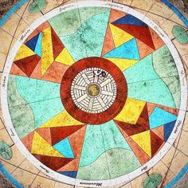

Destaque de hoje: Marco Zero
(clique nas imagens redondas para ver)
A história do Marco Zero no Recife Antigo
Considerado por muitos
um dos mais importantes pontos turísticos do nordeste, o Marco Zero possui belas paisagens e
uma história rica
O Marco Zero no Recife Antigo é o lugar de referência onde a cidade nasceu e todas as medidas oficiais de distâncias rodoviárias usam como ponto de partida. Seu nome é, na verdade, Praça Rio Branco e fica ao lado do Porto de Pernambuco. Pode-se dizer que ele se situa no centro histórico da cidade, que é mais conhecido como Recife Antigo por ser a parte onde se iniciou o povoamento da capital pernambucana. A popularização do nome Marco Zero aconteceu desde 1938, devido à instalação do símbolo geográfico na parte central da praça. Ele foi uma doação do Automóvel Clube de Pernambuco. Além disso, há nela uma estátua de bronze de 2,80 metros, de autoria do escultor francês Félix Charpentier.
Principais pontos turísticos ao redor do Marco Zero no Recife Antigo

O passeio no Marco Zero no Recife Antigo acontece às margens do porto velho (à esquerda) e permite conhecer palacetes históricos,
instalações portuárias, bares, restaurantes e espaços culturais. Confira a seguir as melhores dicas do que fazer no local!
Por onde começar?
A região do Marco Zero em é cheio de atrações culturais, monumentos históricos e ótimos restaurantes.
Além disso, o local abriga um dos carnavais mais animados do nordeste.
A seguir, confira sugestões de programas para a sua viagem:
- Praça do Marco Zero:
Também chamada de praça Barão do Rio Branco, o local é considerado um dos destinos mais visitados de Recife.
A atração é cercada por construções e prédios históricos, como o antigo edifício London River Plate Bank e a Associação Comercial de Pernambuco.
Lá também está situada a pintura da rosa-dos-ventos, que marca o km 0 zero de Recife.
- Edifício da Caixa Cultural:
Localizada a poucos metros da Praça do Marco Zero, o edifício Caixa Cultural também valoriza a história local.
Construído em 1912, o espaço funcionou durante muito tempo como a Bolsa de Valores de Pernambuco.
Atualmente é palco de diversas exposições que valorizam a música, o teatro e outras manifestações culturais.
O espaço está aberto para visitação de terça a domingo, das 10h às 18h. A entrada é gratuita.
- Parque das esculturas – Francisco Brennand:
O Parque das Esculturas homenageia o artista pernambucano Francisco Brennand, pois destaca as suas principais obras no local.
O atrativo reúne cerca de 90 esculturas, representadas em uma exposição ao ar livre.
Entre as principais obras do autor se destaca a Torre de Cristal, com aproximadamente 32 metros de altura.
Por fim, para chegar ao local é preciso alugar um barco a partir do Marco Zero ou ir de carro pela Avenida Brasília Teimosa.
O passeio é gratuito.
- Centro de Artesanato de Pernambuco:
Com mais de 2 mil m², o Centro de Artesanato de Pernambuco permite um passeio pela cultura e tradições de Recife.
Localizada em frente ao Marco Zero, a atração possui mais de 25 mil obras de artesãos locais do estado de Pernambuco.
No acervo estão quadros, esculturas, cerâmicas e até cordéis, que valorizam a cultura nordestina.
O atrativo está aberto para visitação de segunda a sábado, das 9h às 19h, e aos domingos, das 10h às 16h.
- Armazém do Porto:
Situado às margens do estuário de Pernambuco, o Armazém do Porto é um convite para conhecer a culinária do nordeste
enquanto se encanta com uma vista encantadora do porto de Recife. No espaço, estão localizados cafés, bares e restaurantes que servem pratos,
lanches e bebidas. O espaço está aberto de domingo a quarta-feira, das 10h às 22h, quinta-feira, das 10h à 00h e sexta e sábado, das 10h às 3h.
- Restaurante Seu Boteco:
Localizado no Armazém do Porto, o restaurante Seu Boteco é um dos mais tradicionais da região. O espaço possui uma infraestrutura agradável,
bom atendimento e preço acessível. Além disso, oferece pratos da culinária nacional, bebidas, quitutes e sobremesas. Um prato que você precisa
provar por lá é a Feijuca, que valoriza ingredientes regionais com um sabor único.
- Centro de Artesanato de Pernambuco:
Com mais de 2 mil m², o Centro de Artesanato de Pernambuco permite um passeio pela cultura e tradições de Recife.
Localizada em frente ao Marco Zero, a atração possui mais de 25 mil obras de artesãos locais do estado de Pernambuco.
No acervo estão quadros, esculturas, cerâmicas e até cordéis, que valorizam a cultura nordestina.
O atrativo está aberto para visitação de segunda a sábado, das 9h às 19h, e aos domingos, das 10h às 16h.
- Armazém do Porto:
Situado às margens do estuário de Pernambuco, o Armazém do Porto é um convite para conhecer a culinária do nordeste
enquanto se encanta com uma vista encantadora do porto de Recife. No espaço, estão localizados cafés, bares e restaurantes que servem pratos,
lanches e bebidas. O espaço está aberto de domingo a quarta-feira, das 10h às 22h, quinta-feira, das 10h à 00h e sexta e sábado, das 10h às 3h.